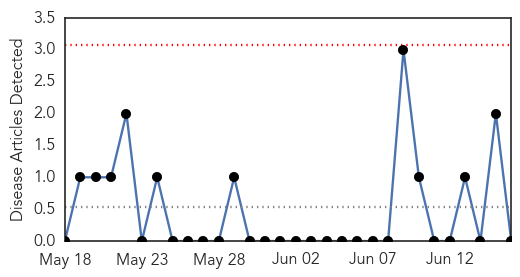

Ebola
30-Day Web Trend
6 alerts, 0 warnings
30-Day Twitter Trend
1 alerts, 0 warnings

Article Locations

Article Confidences
Top Articles:
Top Tweets:
-
No tweets found for Jun 16, 2014
Mold/Fungal
30-Day Web Trend
0 alerts, 0 warnings

30-Day Twitter Trend
0 alerts, 0 warnings

Article Locations

Article Confidences

Top Articles:
-
No articles found for Jun 16, 2014
Top Tweets:
-
No tweets found for Jun 16, 2014